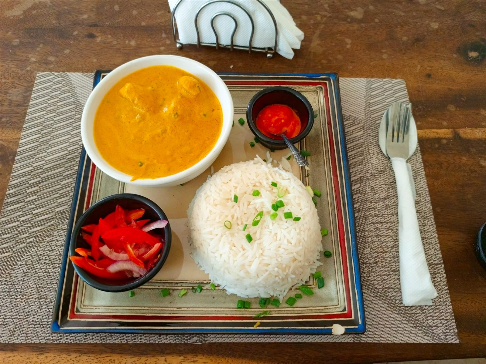
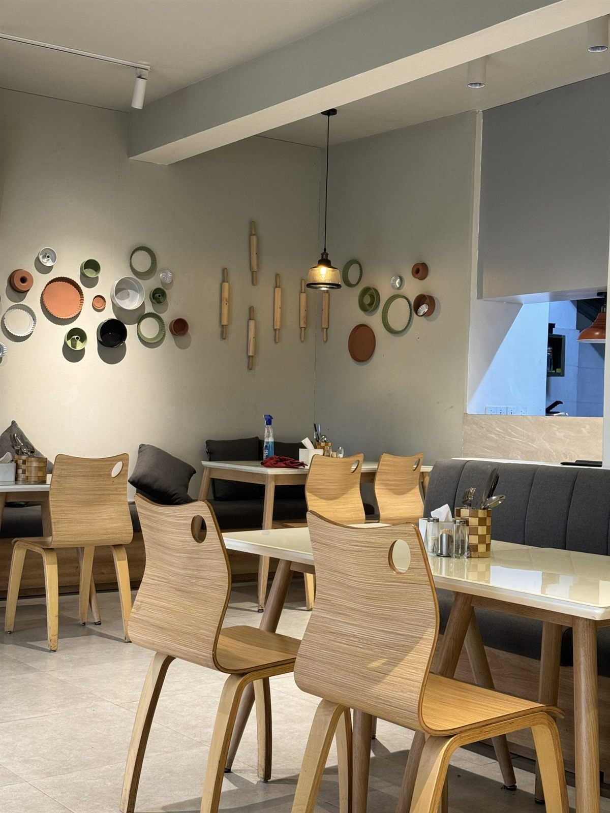
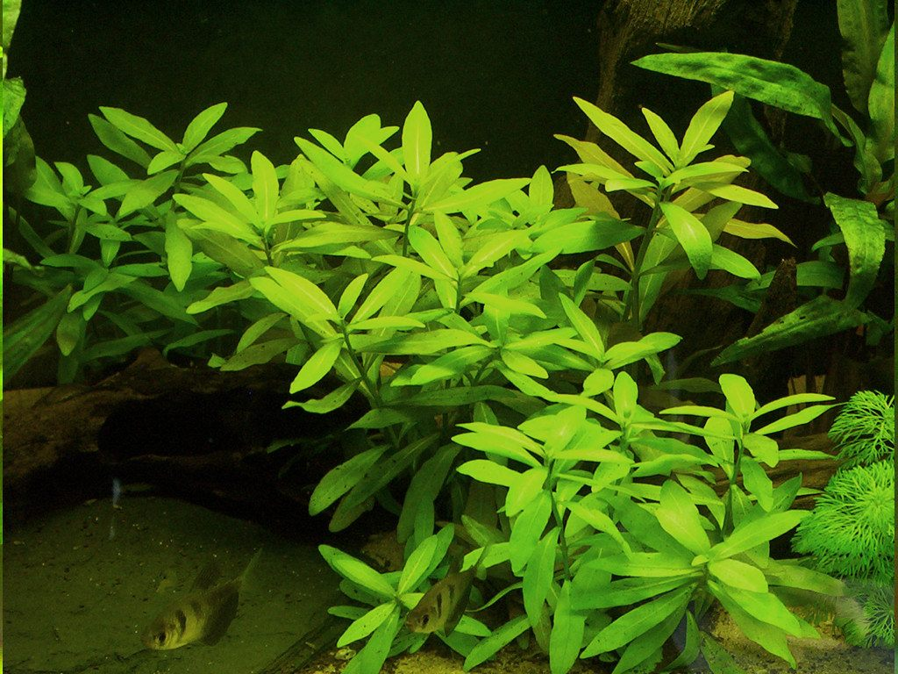
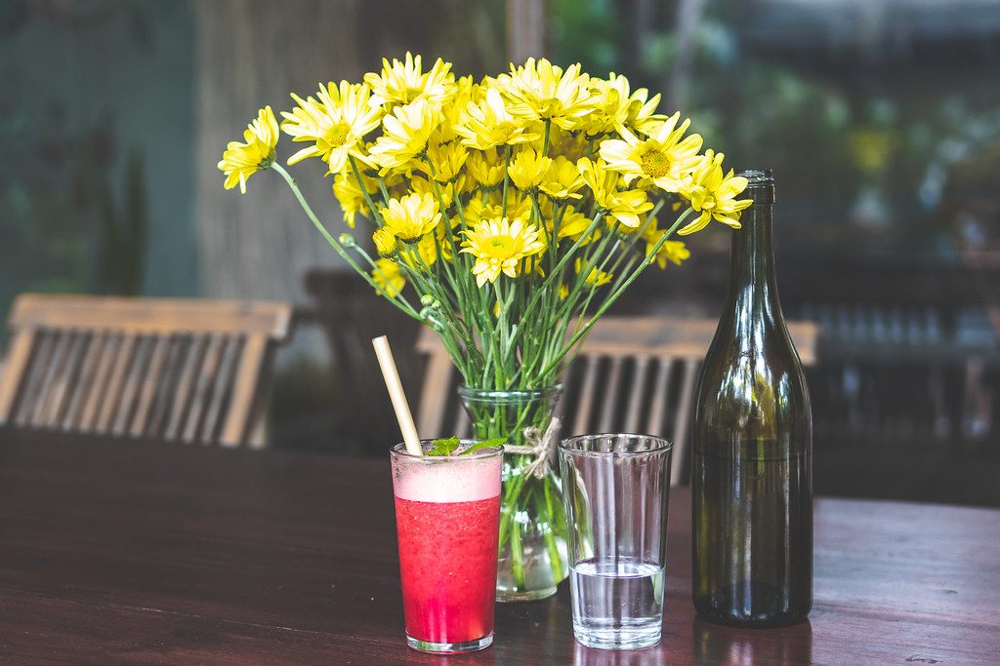
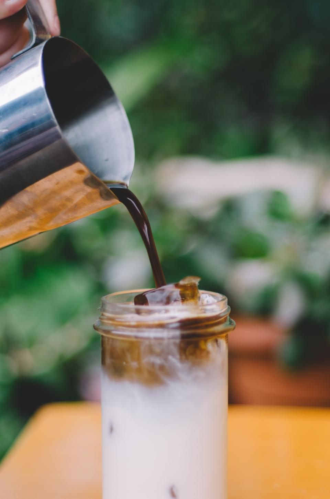
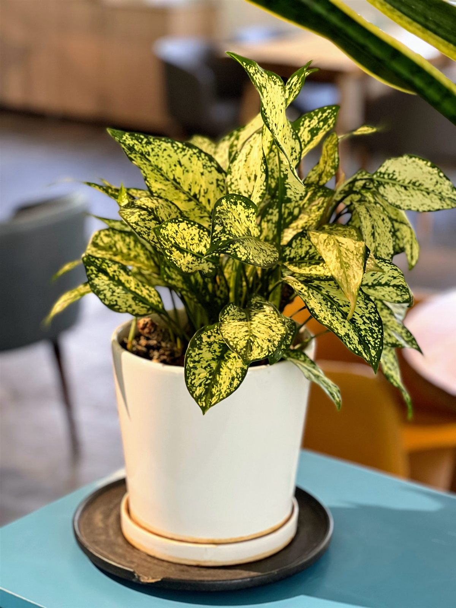
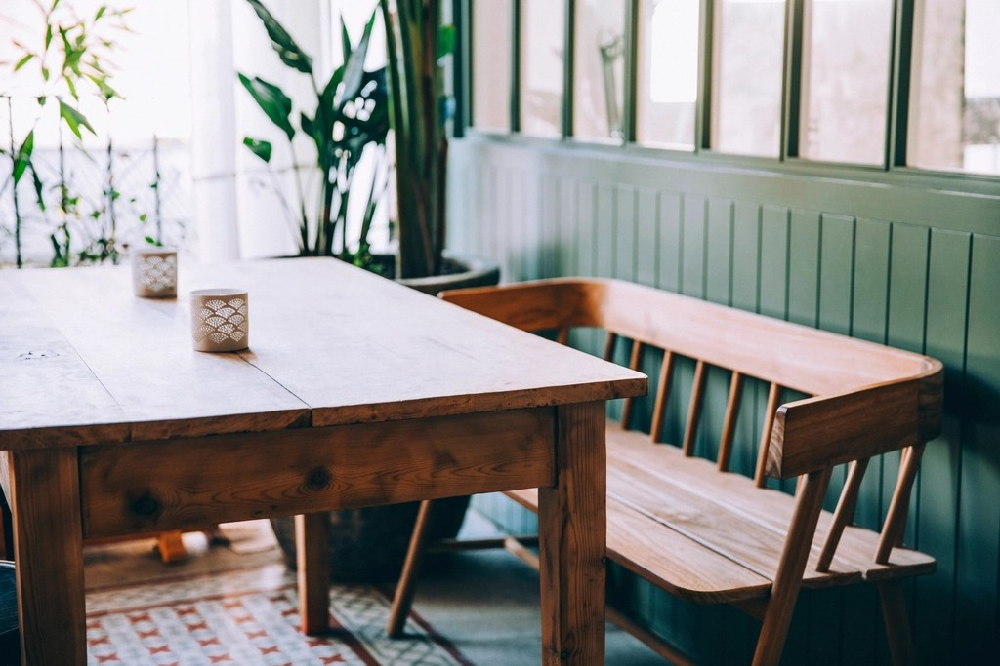

千葉県流山市 平和台駅すぐ
水槽と観葉植物にかこまれて、
優しいスパイスの一皿を。
流鉄流山線 平和台駅からすぐ。
こじんまりとした店内で、辛さ控えめの繊細なスパイスカレーを。
DELISH&CURRY326
流鉄流山線 平和台駅からすぐ／〒270-0157 千葉県流山市平和台3丁目4-12 コーポ福澤
Concept
水槽と観葉植物のある、
小さな寛ぎ空間
平和台駅のロータリーからすぐ、小さな灯りが目印のスパイスカレー店です。
4人掛けテーブル2卓、2人掛けテーブル1卓、カウンター3席ほど(目安)の
こじんまりとした店内には、エビや魚が泳ぐ水槽と観葉植物が置かれ、
カフェのようにおしゃれで、どこか懐かしく落ち着ける空気が流れています。
混み合う時間帯でも、店主が「広いお席へどうぞ」と声をかけてくれるような、
細やかな気配りのある接客も魅力のひとつ。辛さやスパイスの主張は控えめに、
複雑な香りと味わいのバランスをじっくり楽しめる一皿を、どうぞごゆっくり。


Drink
カレーに寄り添う、
やさしい飲みもの

自家製ジンジャーエール
生姜をきかせた自家製のジンジャーエール。すっきりとした後味で、スパイスの余韻を心地よく洗い流してくれます。
濃厚ラッシー
なめらかで濃厚なラッシー。スパイスの効いたカレーと合わせると、まろやかさが引き立ちます。

アイスコーヒー
すっきりとした味わいのアイスコーヒー。食後の一杯としても、カレーの合間の一息にもどうぞ。
ホットジンジャー
生姜の甘さとスパイスがやさしく香るホットジンジャー。体の内側からじんわりと温まる、〆の一杯におすすめです。
Message
マスターより
お一人でも、ご家族連れでも、気兼ねなく。
平和台駅のすぐそばで、小さなカレー店を営んでいます。 水槽の中で泳ぐ魚たちや、窓辺の観葉植物を眺めながら、 ほっと一息つけるような時間を過ごしていただけたら嬉しいです。
スパイスの香りは大切にしながらも、辛さは控えめに。 一口ごとに味の変化を楽しんでいただけるよう、日々調整を重ねています。 お一人でも、ご家族連れでも、気兼ねなく立ち寄っていただける 「近所の小さなカレー屋さん」でありたいと思っています。
店内が混み合う時間帯もございますが、精一杯お迎えいたします。 どうぞお気軽にお越しください。
※店主の顔写真は掲載しておりません。
最新の営業状況やメニューの様子はInstagramでもご紹介しています。ぜひご覧ください。
Gallery
水槽のある、
小さな寛ぎ空間


Voice
お客様の声
Google マップにお寄せいただいた口コミより、一部を抜粋してご紹介します。
(評価 4.8 / 口コミ29件・2026年9月時点、投稿者情報は匿名化して掲載しています)
流山線 平和台駅からすぐの場所にあるスパイスカレーのお店です。店内は4人掛けテーブル席が2卓、 2人掛けテーブル席が1卓、カウンターが3席ほどでこじんまりしていますが、水槽や観葉植物が置かれ おしゃれで居心地がいい空間です。チキンカレーはスパイシーですがそれほど辛くは無く、複雑な味と 香りでとても美味しいです。スパイスカレーですが全体的には辛さやガツンと来るスパイス感は抑えた 優しめの味で、日本人向けの繊細な味のバランスを楽しむカレーだと思います。
平和台駅ロータリーからすぐの場所にあるスパイシーなカレーを提供しているお店です。カフェのような お洒落な店内にエビや魚のアクアリウムがあり素敵な雰囲気のお店です。チキンカレーのドリンクセット (濃厚ラッシー)をいただきました。味はさっぱりとしていますが奥行きがありスパイスの効いたカレーに 付け合せがよく合って美味しかったです。塩味が割とあるのでゆで卵と抜群に相性がよく、ラッシーも 美味しかったです。
平和台駅からすぐの小さなお店です。笑顔の優しい店主の方の人柄もよく、ホッとする空間です。 326チキンカレーとアイスコーヒー、チキンカレーとキーマカレーの合盛りと自家製ジンジャーエールを いただきました。どれも美味しい!キーマカレーにはレンコンが入っていて食感も楽しいです。 チキンカレーのチキンも柔らかく、爽やかな辛さで、スパイス感タップリ。付け合せの赤玉ねぎの酢漬けも サッパリとしていて相性良しでした。欧風カレーは辛さ控えめだそうです。平日限定のハンバーグ トッピング(+200円)も気になりました。
二種盛り(326チキン&キーマ)カレーの大盛を食べました。どちらも最初食べ始めは辛さはそれほど 感じなかったですが、食べ進むと体がポカポカとしてきて顔全体から薄っすら汗が出てきました。 スパイスの香りもよく感じられて滅茶苦茶美味かったです。付け合せの茹で玉子や赤玉ねぎのピクルスも 箸休めにピッタリで、最後まで美味しかったです。食後にセットで付けたホットジンジャーを飲みましたが、 これまた甘さとスパイスがよく合っていてカレーとの組み合わせもピッタリでした。
掲載口コミはGoogleマップに投稿されたものを、投稿者情報を匿名化した上で抜粋掲載しています。
Access
アクセス
流鉄流山線「平和台駅」からすぐ、駅ロータリー付近にお店はございます。 電車をご利用の際は、改札を出て徒歩すぐの距離です。
店舗専用の駐車場はございません。お車でお越しの際は、お近くのコインパーキングを ご利用くださいますようお願いいたします。
- 住所
- 〒270-0157 千葉県流山市平和台3丁目4-12 コーポ福澤
- 電話番号
- 04-7199-9742
- 最寄り駅
- 流鉄流山線 平和台駅からすぐ(駅ロータリー付近)
※上記はローカル線の雰囲気を伝えるためのフリー素材のイメージ写真です。実際の平和台駅の写真ではありません。
お気軽にお立ち寄りください
水槽と観葉植物にかこまれた、小さなカレー店で。
辛さ控えめの繊細なスパイスカレーと、やさしい時間をお楽しみください。
ご予約についてのご相談は、お電話にてお気軽にお問い合わせください。
営業時間・定休日は変更になる場合がございます。最新情報はInstagramをご確認ください。